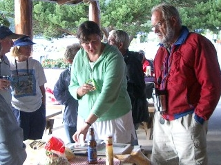
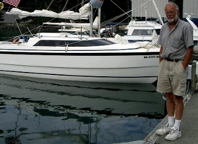

| Main | CB | FB | Fast | Size | Keel | Ballast | Point | Tall | Race | Lean | Ocean |
|
|
The Hunter 260 and many other vessels that
are |
Contrary to marketers of lesser vessels who like to say otherwise, MacGregor Yachts is a builder of ocean sail boats and not a builder of boats meant for the first time purchaser. Boats like the Hunter 260, which competes with MacGregor Yachts latest 26 footer, are meant to attract purchasers that are new to boating. The notion that "the interior design is what sells a boat" (rather than superior engineering) is a notion Macgregor Yachts did not subscribe to with the Mac26x. These are attractive to purchasers who have owned other boats, often larger boats, retired military and those with aerospace engineering or mechanical backgrounds. Many profesional captains prefer to own Mac26x cruisers and as discussed below will say so. It is not correct to call the X a weekender, second home boat, water RV or placeholder. For many the X will be the only boat they choose to own.
Because a displacement monohull under 40 feet will never provide the luxury of adequate speed, these designs - when judged by modern standards - represent the worst of new models today. MacGregor Yachts referred to these boats as turkeys in its marketing materials for the X. That equates to a CE Category C cruiser in today's terminology. Can a sailboat that is restricted to less than Beaufort 7 (30 knot wind conditions) really be called a cruiser? These are lake boats and not ocean cruisers. The Oden 820 and Mac26m designations as C boats are confusing. Both the M and the Oden 820 hulls are currently built as ocean hulls in a manner similar if not identical to the Mac26x, Mac65, and Mirabella V. Perhaps their experimental nature requires the manufacturers to designate them as Category C. In anycase, a new or like new Mac26x is fit for all waters. To search this site enter a word or phrase below:
|
 Owing to "focally ruptured gangreous acute appendicitis",
I spent the better part of January 2001
arguing about this (the Mac26x is fit for all waters), rather than sailing
or working, and have 80 pages of
emails as well as several magazines and books on boat
design involving the subject. Practical Sailor quotes the
manufacturer's belief that a 26 footer is too small
to hold enough gear and supplies for passage. However,
at least one Mac26x dealer considers
ocean passage to be within the boat's design parameters
and in 1999 more that a few Mac26x vessels made the trip from Crandon Park
marina on Miami's Key Biscayn or nearby to the Bahamas. At
least one Mac26x
yacht made the trip from the city marina at Garison Bight in Key West to
the Marquesas and on to the Tortugas. The 1000 mile coast of Florida has
been sailed by a Mac26x. And two Mac26x cruisers (from Bellingham
and Everett)
were outfitted for an Alaskan inside passage (over 2000 miles) following
the
Cassiopeia
in that regard. Those who find the
ride of a light displacement
under 30 foot sailboat preferable in ocean swells see its potential as
a long-distance passage maker. This is demonstrated by reports
that MacGregor Yachts receives many unsolicited requests for sponsorship
of expeditions involving
Mac26x ocean passages and by the consideration given to adding a
platform (as discussed above) which would be used
for
storage
during an extended cruise. It is also a favorite for chartering at blue
water destinations such as the BVI, Malaysia, Spain and Belize.
As demonstrated by the math in the following
applet the Mac26x was designed for ocean use. Hold your mouse over the
words and fields for explanations. See
http://image-ination.com/sailcalc.html for comparison to other
sail boats.
Owing to "focally ruptured gangreous acute appendicitis",
I spent the better part of January 2001
arguing about this (the Mac26x is fit for all waters), rather than sailing
or working, and have 80 pages of
emails as well as several magazines and books on boat
design involving the subject. Practical Sailor quotes the
manufacturer's belief that a 26 footer is too small
to hold enough gear and supplies for passage. However,
at least one Mac26x dealer considers
ocean passage to be within the boat's design parameters
and in 1999 more that a few Mac26x vessels made the trip from Crandon Park
marina on Miami's Key Biscayn or nearby to the Bahamas. At
least one Mac26x
yacht made the trip from the city marina at Garison Bight in Key West to
the Marquesas and on to the Tortugas. The 1000 mile coast of Florida has
been sailed by a Mac26x. And two Mac26x cruisers (from Bellingham
and Everett)
were outfitted for an Alaskan inside passage (over 2000 miles) following
the
Cassiopeia
in that regard. Those who find the
ride of a light displacement
under 30 foot sailboat preferable in ocean swells see its potential as
a long-distance passage maker. This is demonstrated by reports
that MacGregor Yachts receives many unsolicited requests for sponsorship
of expeditions involving
Mac26x ocean passages and by the consideration given to adding a
platform (as discussed above) which would be used
for
storage
during an extended cruise. It is also a favorite for chartering at blue
water destinations such as the BVI, Malaysia, Spain and Belize.
As demonstrated by the math in the following
applet the Mac26x was designed for ocean use. Hold your mouse over the
words and fields for explanations. See
http://image-ination.com/sailcalc.html for comparison to other
sail boats.

But some do not consider a trip across the English Channel, which is done by Mac26x boats, or a trip from Key West to Cuba, which I would like to do, or even circumnavigating Vancouver Island, to be an ocean crossing or passage. There is consensus among Mac26x owners that the boat was designed for coastal ocean cruising (something mistakenly believed to be less dangerous than ocean crossing). However, the uninitiated find even that hard to believe owing to boats such as the Hunter 260, which is specifically limited by the manufacture's rating to inshore use. The Hunter 260 CE Classification is C, designed for voyages in coastal waters, large bays, estuaries, lakes and rivers where conditions up to, and including, wind force 6 and significant wave heights up to, and including, 2m may be experienced. The Mac26M is similarly limited as is the Odin 820. The Mac26m and the Odin 820's because of the extra layer of fiberglass (in comparison to the Hunter 260) are potential offshore cruisers. Owner experiences in rough water over time may encourage their manufacturers to upgrade the clasifications. The X cruisers have always been manufactured marketed, and reviewed as ocean sailboats with equivalent CE Classification B. Owing to off centerline water ballast and the hard side chines and rigging, X cruisers have a relatively high angle of vanishing stability (exceeding 115 unballasted and 140 with water ballast) and are worthy of offshore classification. The only difference between a B classified vessel and one with the highest A rating is that the vessel must be largely self-sufficient. An X equiped with modern space saving electronics and water maker is worthy of that highest rating and could be expected to make passage faster than a Hunter HC50
Short of
global
circumnavigation the definition of ocean crossing/ passage is
disputed.
But trailer sailboats have
circumnavigated.

Edward D Mitchell edm32@juno.com, an early Mac26x owner, remembers a MacGregor engineer saying that "if a person wanted a blue water passage maker they should buy something like a [20 foot] Pacific Seacraft as they were designed for that." That isn't actually true. The Flicka style vessels were designed for fishing and are outfitted for ocean crossing. According to Mitchell the engineer "went on to say the 26x was designed for short cruises on the ocean and since you must be ready for what ever comes when you are anywhere on the ocean, it was designed to take what was thrown at it. The main question being what the crew could handle."I met a couple who survived a hurricane in a Mac25. The boat did fine but the crew did give up sailing for a few years after the episode. So I think Mitchell's quote reflects the philosophy of the manufacturer.
I have been asked many times for proof that the Mac26x can, with suitable crew, be considered ocean worthy. Until November of 2001, I was unaware that proof (outside of the mathematical ratios) existed. Any debate on this is academic owing to the storm during the 1998 Hobart race. Close to 60 had to be saved during that race and 6 died. But a different race was taking place at the same time. The flat, thin, planing, water ballasted, center boarded extreme sailing machines took the exact same storm at about the same place and did so without undo problems and single handed under sail!
I really do not know how Macgregor Yachts keeps quiet about this proof. The center boarders were on a beam reach and the Hobarters were beating. Which is harder in rough seas is the only thing that can be debated. The facts solidly support our kind of cruiser as superior in rough sea. The Mac26x limit of positive stability is about 115 according to the manufacturer. I believe from reading transcripts regarding the Hobart deaths that gear storage impacts that stability. The transcripts indicate that boats with "stability index of 110" are grandfathered but that new Hobart boats require 115. It appears that Mac26x cruisers are more worthy of blue water racing than many boats currently doing so.
Hence, I think some one will eventually sail a Mac26x from SF to Hawaii as part of a flotilla of larger and other vessels perhaps under the leadership of a company like The Moorings or from Vancouver to Hawaii or in the biennial West Marine Pacific Cup which specifically allows water ballasted vessels as small as 24 feet. There may have been a Mac26x ocean crossing from San Diego to Hawaii but I have been unable to confirm this. It is important to note that Mac26x boats are already in Hawaii and other blue waters, with other long distance pocket cruisers such as the Flickas and Danas from Pacific Seacraft, having avoided ocean passage by being shipped in cargo containers.
This is how the Executive Director of a national development program in the Republic of Kiribati got a fleet of Mac26x cruisers to the Marshall Islands where they were used for transporting medical and dental teams and supplies and were routinely sailed 500 miles from the Marshall Islands to the Republic of Kiribati. The director, shane@moonrakerdevelopment.com holds a merchant marine license, has a hundred-ton ticket, has sailed the world in many vessels including Columbia's and Catamarans, owned a Mac26x and in 2002 indicates he would like to purchase a used one - probably regretting the sale of his first. He is a real fan of the cruiser and has sailed them in rough conditions and nothing broke. It is that kind of praise that makes me question those who claim the Mac26x is not a blue water cruiser. For a crew of two it may be the ideal blue water cruiser. (The vast majority of voyaging boats are crewed by couples.) It is very hard to define "blue water" so that it excludes Mac26x sail boats from at least consideration as true blue water cruisers.
The only historical reference for the term "blue water" is to a 55-foot Alden ocean racing schooner that was named Blue Water. She is just as famous as the Brilliant, a 61 footer that sails the Carabian out of Mystic even today. Both were built pre 1950. The current day ETAP 26i is marketed as a "rough and ready" blue water cruiser. She is about 1 foot longer at the water line and 1,000 lbs heavier than an X. The offshore pocket cruiser potential of the Mac26x was recognized as early as 1997 by Offshore Magazine and continues to exceed expectations.
Regardless of ocean passage design considerations there are very few blue water destinations that can not be reached by trailering and containering a Mac26x.
|
|
|
|
|
Frank & Lisa Mighetto - 1260 NE 69th St. Seattle, WA 98115 - (206) 525-1458 voice and fax
mighetto@eskimo.com - Internet email address
mighetto@compuserve.com - Internet email address or 72154,3467 from within Compuserve